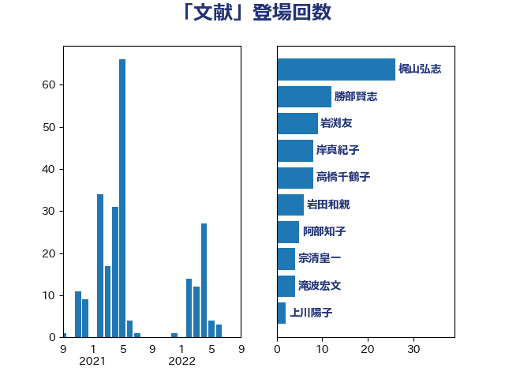

単語「文献」

| 梶山弘志 | 自由民主党 | 26 回 |
| 勝部賢志 | 立憲民主党 | 12 回 |
| 岩渕友 | 日本共産党 | 9 回 |
| 岸真紀子 | 立憲民主党 | 8 回 |
| 高橋千鶴子 | 日本共産党 | 8 回 |
| 岩田和親 | 自由民主党 | 6 回 |
| 阿部知子 | 立憲民主党 | 5 回 |
| 宗清皇一 | 自由民主党 | 4 回 |
| 滝波宏文 | 自由民主党 | 4 回 |
| 上川陽子 | 自由民主党 | 2 回 |
| 仁木博文 | 無所属 | 2 回 |
| 大塚耕平 | 国民民主党 | 2 回 |
| 安江伸夫 | 公明党 | 2 回 |
| 川合孝典 | 国民民主党 | 2 回 |
| 江島潔 | 自由民主党 | 2 回 |
| 田村憲久 | 自由民主党 | 2 回 |
| 穀田恵二 | 日本共産党 | 2 回 |
| 空本誠喜 | 日本維新の会 | 2 回 |
| 萩生田光一 | 自由民主党 | 2 回 |
| 伊東信久 | 日本維新の会 | 1 回 |
| 伊藤孝江 | 公明党 | 1 回 |
| 務台俊介 | 自由民主党 | 1 回 |
| 古川俊治 | 自由民主党 | 1 回 |
| 吉田忠智 | 立憲民主党 | 1 回 |
| 寺田静 | 無所属 | 1 回 |
| 小泉進次郎 | 自由民主党 | 1 回 |
| 山岡達丸 | 立憲民主党 | 1 回 |
| 山本博司 | 公明党 | 1 回 |
| 斉藤鉄夫 | 公明党 | 1 回 |
| 末松信介 | 自由民主党 | 1 回 |
| 末松義規 | 立憲民主党 | 1 回 |
| 松沢成文 | 日本維新の会 | 1 回 |
| 林芳正 | 自由民主党 | 1 回 |
| 石井章 | 日本維新の会 | 1 回 |
| 礒崎哲史 | 国民民主党 | 1 回 |
| 秋野公造 | 公明党 | 1 回 |
| 舟山康江 | 国民民主党 | 1 回 |
| 蓮舫 | 立憲民主党 | 1 回 |
| 赤羽一嘉 | 公明党 | 1 回 |
| 金子俊平 | 自由民主党 | 1 回 |
| 階猛 | 立憲民主党 | 1 回 |
| 馬場伸幸 | 日本維新の会 | 1 回 |
| 高橋克法 | 自由民主党 | 1 回 |